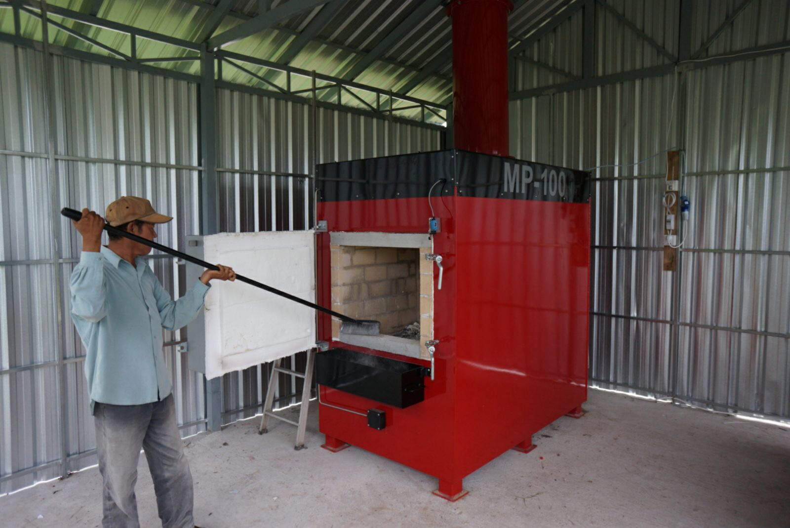

<!DOCTYPE html>
<html lang="en">
    <head>
        <title>Homes Starting a New Beginning</title>
        <link rel="stylesheet" href="styles.css">
    </head>
</html>

    <section class="title">

<H1>Homes Starting a New Beginning</H1> 

</section>

<nav class="navbar">

    <a href="index.html">Home</a>
        <a href="Interior2.html">Interior</a>
        <a href="Technology features.html">Technology features</a>
      <a href="Cleaning ai.html">Cleaning ai</a>
    
    </nav>
        <section class="row"></section>


        <section class="center">

        </section>
        <section class="row"></section>

        <section class="room">

        
        
        
        

        </section>

        <section class="row"></section>
       
        <section class="Interior">

<p>Using an aluminum wedge with a dishwasher can be 
<br>a handy solution for various issues like the noise 
<br>and maintenance. </p>

<p>Robot mice designed for dirt and dust cleaning are 
<br>compact, automated devices that help maintain a 
<br>tidy home with minimal effort.</p>

<p>An incinerator is a device used to burn waste 
<br>materials at high temperatures, converting 
<br>them into ash, gas, and heat.</p>

<p>"Copper scrap rats" likely refers to individuals 
<br>or workers who collect copper scrap and other 
<br>metals from larger trash or waste, sometimes to 
<br>take them to an incinerator or recycling facility.</p>

        </section>

        <section class="row"></section>

<section class="room">

 

  


   


       

</section>

<section class="Interior">

<p>Motion detection is a technology used in                 
    <br>various applications to identify movement 
    <br> a specified area.</P>

<P>Cameras can serve many important purposes in various
<br>contexts with keeping your home safe. 
<br>You could also watch from your own phone.</P>

<P>This new technology lets off sounds and 
<br>motion sprinklers to scary off unwanted animals. </P>


</section>

<section class="row"></section>

<section class="room">


      


       


</section>


<section class="Interior">

<P>They allow direct communication between the brain and external 
<br>devices, enabling people 
    <br>to control technology with their thoughts.</P>

<P>With these technology it allows all the memory from the 
<br>house records to be recorded.</P>

<P>With these automatic windows you can let open 
<br>sun light or have a nice breeze without 
    <br>having to get up and open it.</P>

</section>

<section class="row"></section>

<section class="center">


</section>

<section class="center">

<h2>A fireplace is a structure designed to contain a fire, 
    providing warmth, ambiance, and often a focal point in a room.</h2>


</section>